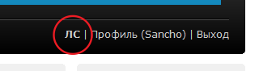
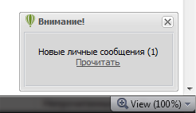
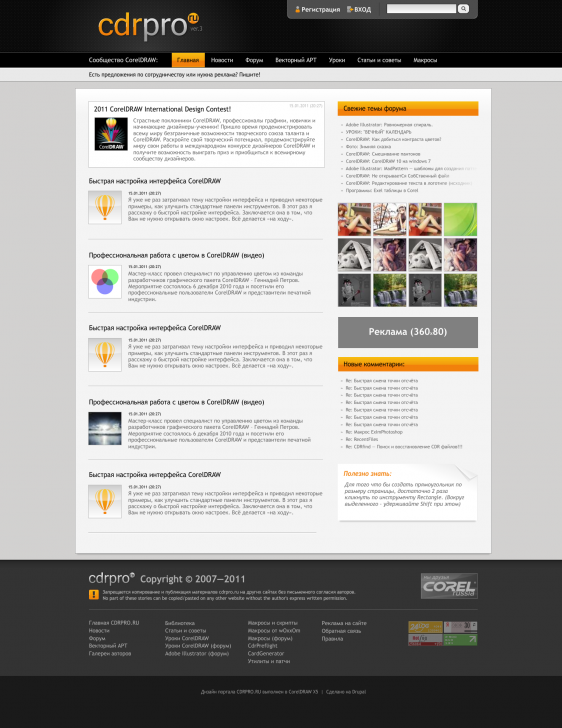
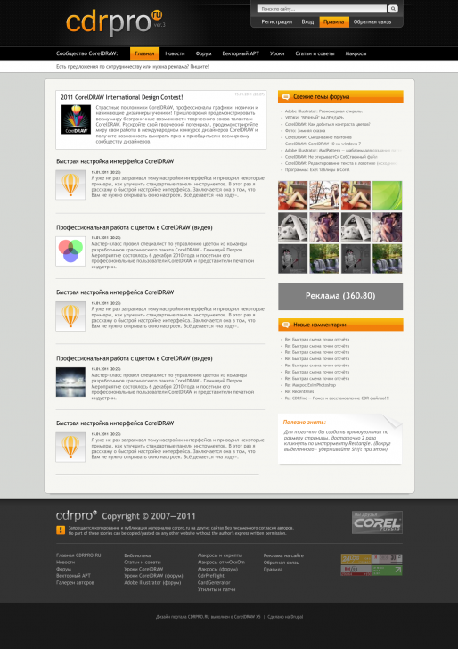

Дизайн и вёрстка cdrpro.ru
Sancho / 19.02.2010, 00:19/15:26
С недавних пор меня смущает текущий дизайн, да и вёрстка тоже, этого сайта. Я хочу сделать ре-дизайн. Есть ли какие то идеи или замечания? было бы весьма кстати. Хотелось бы услышать мысли как постоянных участников, так и вновь прибывших.
Я просто про то, что если мы сделаем главную разделом "новости", тогда у нас останутся не удел уроки и макросы, а это никуда не годится.
Кстати говоря, скорее всего текущие раздел "уроки" и "статьи и советы" объединю в один, т.к. по смыслу это практически одно и то же. И добавлю раздел-кладовку знаний под названием "Библиотека", о котором я уже говорил.
П.С. и по дизайну и по функционалу вообще, трудно пока что говорить. Ибо я всё придумываю/передумываю на ходу. Но от вас всё же хотел бы слышать какие то пожелания/комментарии.
Ещё раз напомню, что главная задача — лёгкий, без лишнего функционала, информационный портал.

а так же всплывающее сообщение на любой странице сайта:

Вот только скорее всего в новой системе я не буду ставить модуль личных сообщений. Возможно просто будет форма для связи по e-mail в профиле каждого участника. Хотя это ещё не точно.

Комментарии и пожелания приветствуются.

На этом, думаю, и остановлюсь. Остальные доработки/правки уже буде делать по ходу вёрстки.
Страницы